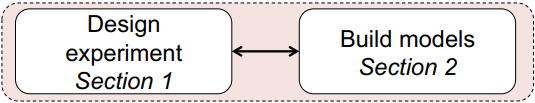
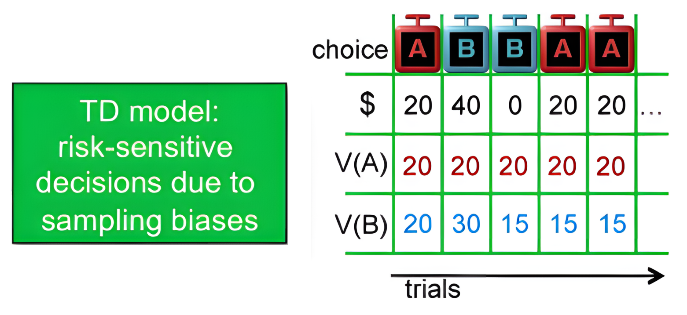
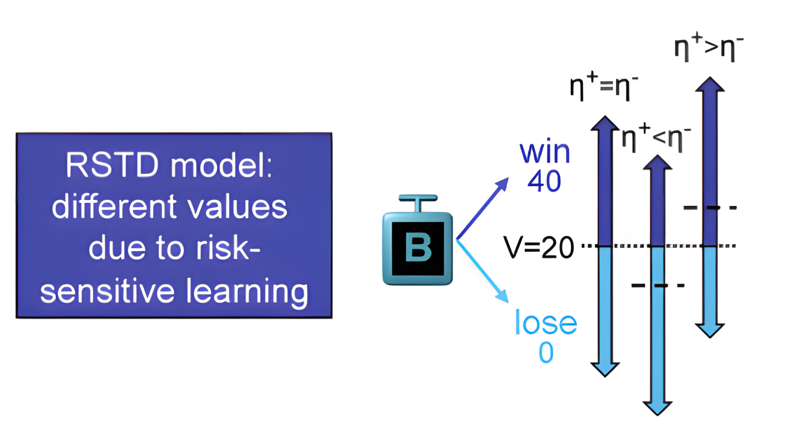
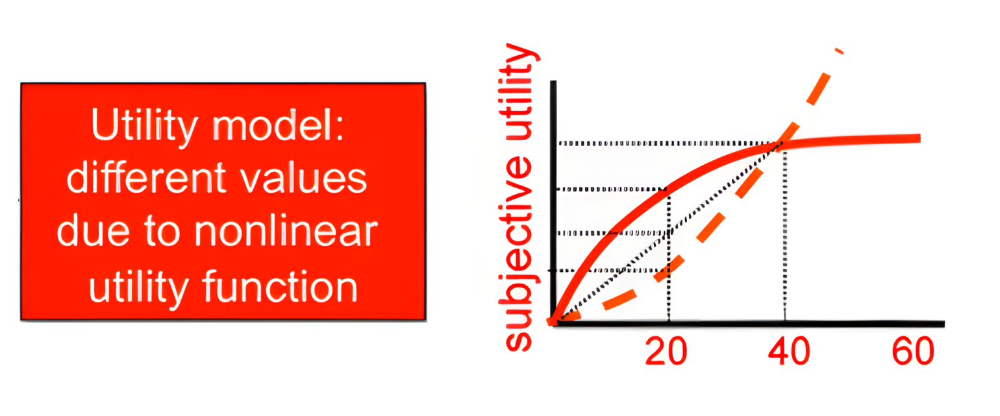
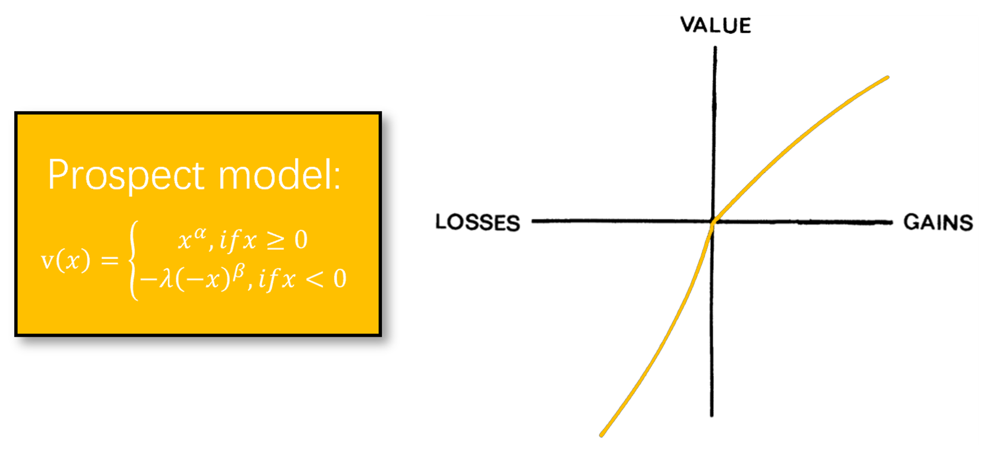

data <- multiRL::TAB
behrule = list(
cue = c("A", "B", "C", "D"),
rsp = c("A", "B", "C", "D")
)
colnames = list(
subid = "Subject", block = "Block", trial = "Trial",
object = c("L_choice", "R_choice"),
reward = c("L_reward", "R_reward"),
action = "Sub_Choose",
exinfo = c("Frame", "NetWorth", "RT")
)TD

multiRL.model <- multiRL::run_m(
#engine = "R",
data = data[data[, "Subject"] == 1, ],
behrule = behrule,
colnames = colnames,
params = list(
free = list(
alpha = 0.5,
beta = 0.01
)
),
priors = list(
alpha = function(x) {stats::dbeta(x, shape1 = 2, shape2 = 2, log = TRUE)},
beta = function(x) {stats::dexp(x, rate = 1, log = TRUE)}
),
settings = list(name = "TD", policy = "on")
)
multiRL.summary <- multiRL::summary(multiRL.model)## Model Fit:
## Accuracy: 51.39%
## Log-Likelihood: -254.54
## Log-Prior Probability: 0.4
## Log-Posterior Probability: -254.14
## AIC: 513.07
## BIC: 520.84RSTD

multiRL.model <- multiRL::run_m(
data = data[data[, "Subject"] == 1, ],
behrule = behrule,
colnames = colnames,
params = list(
free = list(
alphaN = 0.3,
alphaP = 0.7,
beta = 0.5
)
),
priors = list(
alphaN = function(x) {stats::dbeta(x, shape1 = 2, shape2 = 2, log = TRUE)},
alphaP = function(x) {stats::dbeta(x, shape1 = 2, shape2 = 2, log = TRUE)},
beta = function(x) {stats::dexp(x, rate = 1, log = TRUE)}
),
settings = list(name = "RSTD", policy = "on")
)
multiRL.summary <- multiRL::summary(multiRL.model)## Model Fit:
## Accuracy: 55.28%
## Log-Likelihood: -434.27
## Log-Prior Probability: -0.04
## Log-Posterior Probability: -434.31
## AIC: 874.54
## BIC: 886.2Utility

multiRL.model <- multiRL::run_m(
data = data[data[, "Subject"] == 1, ],
behrule = behrule,
colnames = colnames,
params = list(
free = list(
alpha = 0.5,
beta = 0.5,
gamma = 0.5
)
),
priors = list(
alpha = function(x) {stats::dbeta(x, shape1 = 2, shape2 = 2, log = TRUE)},
beta = function(x) {stats::dexp(x, rate = 1, log = TRUE)},
gamma = function(x) {stats::dbeta(x, shape1 = 2, shape2 = 2, log = TRUE)}
),
settings = list(name = "Utility", policy = "on")
)
multiRL.summary <- multiRL::summary(multiRL.model)## Model Fit:
## Accuracy: 54.17%
## Log-Likelihood: -441.01
## Log-Prior Probability: 0.31
## Log-Posterior Probability: -440.7
## AIC: 888.02
## BIC: 899.68Prospect

Below, I will implement a new func_gamma to ensure
compatibility with both Stevens’ Power Law and Prospect Theory.
my_func_gamma <- function(
shown,
reward,
rownum,
params,
hidden,
...
){
# `get_param` is an internal function and must be accessed using `:::`
lambda <- params[["lambda"]]
gamma <- params[["gamma"]]
gammaN <- params[["gammaN"]]
gammaP <- params[["gammaP"]]
if (
gamma != 1 && is.na(gammaN) && is.na(gammaP)
) {
model <- "Utility"
} else if (
gamma == 1 && !(is.na(gammaN)) && !(is.na(gammaP))
) {
model <- "Prospect"
} else {
stop("Unknown Model! Plase modify your utility function")
}
# Stevens's Power Law
if (model == "Utility") {
utility <- sign(reward) * (abs(reward) ^ gamma)
}
# Prospect Theory
else if (model == "Prospect" && reward < 0) {
utility <- lambda * sign(reward) * (abs(reward) ^ gammaN)
}
else if (model == "Prospect" && reward >= 0) {
utility <- sign(reward) * (abs(reward) ^ gammaP)
}
return(list(output = utility, hidden = hidden))
}
multiRL.model <- multiRL::run_m(
data = data[data[, "Subject"] == 1, ],
behrule = behrule,
colnames = colnames,
params = list(
free = list(
alpha = 0.5,
beta = 0.5,
lambda = 1.5,
gammaN = 0.7,
gammaP = 0.3
)
),
priors = list(
alpha = function(x) {stats::dbeta(x, shape1 = 2, shape2 = 2, log = TRUE)},
beta = function(x) {stats::dexp(x, rate = 1, log = TRUE)},
lambda = function(x) {stats::dnorm(x, mean = 2, sd = 0.3, log = TRUE)},
gammaN = function(x) {stats::dbeta(x, shape1 = 2, shape2 = 2, log = TRUE)},
gammaP = function(x) {stats::dbeta(x, shape1 = 2, shape2 = 2, log = TRUE)}
),
funcs = list(
# Other unmodified `funcs` will use the built-in functions.
util_func = my_func_gamma
),
settings = list(name = "Prospect", policy = "on")
)
multiRL.summary <- multiRL::summary(multiRL.model)## Model Fit:
## Accuracy: 55%
## Log-Likelihood: -438.79
## Log-Prior Probability: -0.74
## Log-Posterior Probability: -439.52
## AIC: 887.58
## BIC: 907.01